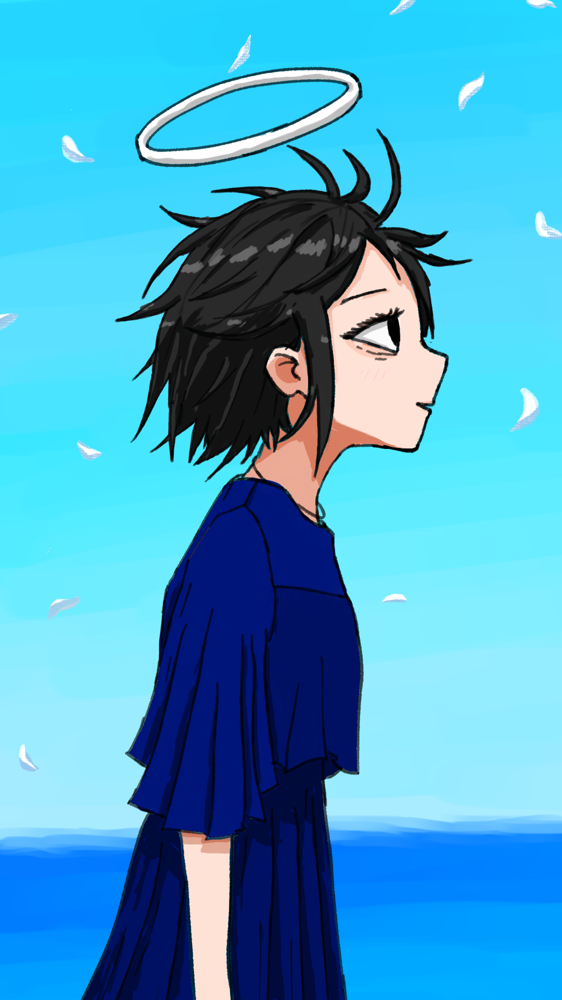

こんにちは、ザクザク食感です。
本日は令和8年8月8日 末広がり×3のめちゃくちゃ縁起がいい日！
そして何を隠そう、僕の誕生日！おめでとう！24歳になってしまった
というのはどうでもよくて、今日、友人が結婚するらしい。おめでとう！！！
知り合いが結婚した事例を一つしか知らないので、僕にとって友人の結婚はまだ新鮮なイベントだ。だが、この知らせを聞いたときはびっくりより安心感が先に来た。
とにかく嬉しかった。幸せになってほしかったというと大げさだが、その友人は精神的に後ろ盾ができることでもっと自分の進みたい方向へ進んでいけるという気がしていた。
その友人の影響で今の僕があるといっても過言ではない。
10代後半になって、家族のことや自分の見た目のこと、外面と内面がどんどんかけ離れていく自分が嫌いで死にたかった時期に、たくさん支えてもらった。
周りに通じない話も女装の話もなんでもできた。僕が知らないことをたくさん知っていた。そこでだけは自分を取り繕わなくてよかったし、かといって手放しに肯定されるでもなくて、それが自分に向き合うきっかけにもなった。
それでも苦しくて、弱かった僕はとにかく助けてほしかった。その結果そこだけが自分の世界のように感じられて、居場所を失いたくなくてたくさん迷惑をかけた。
それでも友達でいてくれたから僕は前を向いて生きてこられて、自立もできたと思うし、こうして吉報も知ることができて、感謝してもしきれない。
僕が大人になるために必要だったというと不遜かもだが、人生を大きく分岐させる出会いだったと思う。
当時の僕のままだったら、自分の世界がなくなったと思っていたのかな
この結婚を心から祝えるようになったことをもって、僕の思春期は終了した。第3部、完！

改めて、結婚おめでとう！！！末永くお幸せに！！！
それでは、さようなら。